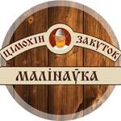
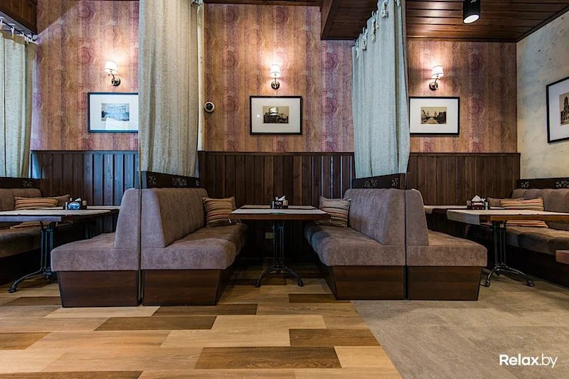
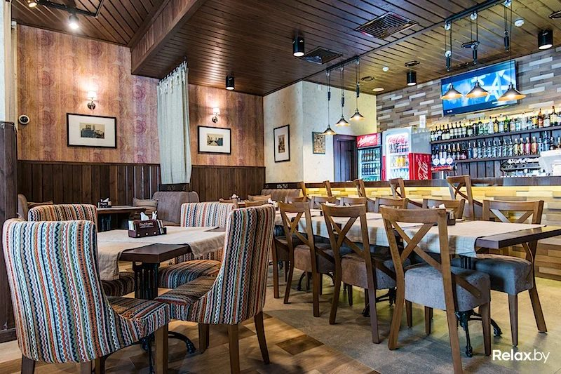
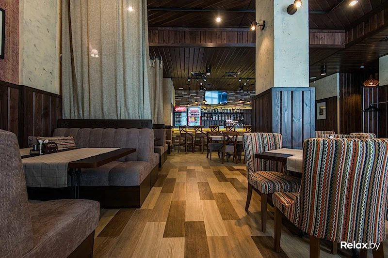

Доставка еды
По данным Яндекс Карт. Условия и зоны — уточняйте.

закутокБорщ, драники, скаблянка, рулька и салаты. Открыто каждый день с 11:00 до 23:00, без выходных.

Деревянные панели, мягкие диваны, шторы и кресла с орнаментом.



По данным Яндекс Карт. Условия и зоны — уточняйте.
Можно забрать заказ с собой. Условия — уточняйте.
Напитки навынос. Список напитков — уточняйте.